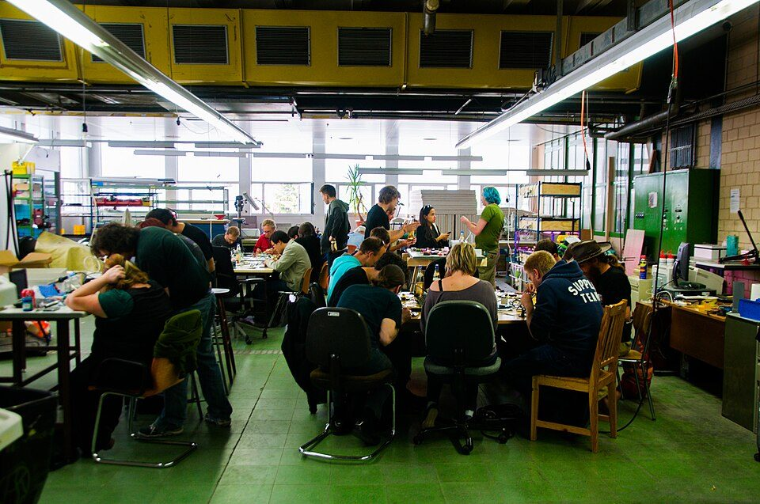

About the Club
Who we are, what we believe in and how the club is run.
Our History
The JKUAT Robotics Club was started in 2021 by a small group of engineering students who wanted a place to practise robotics outside classwork. The first meetings were held in a corner of the Mechatronics Lab with one Arduino kit and a borrowed soldering iron.
Since then the club has grown to more than eighty registered members from different departments. We now run weekly workshops, maintain a small inventory of components and tools, and take at least two teams to national competitions every year. In 2025 our line-following team finished second at the Inter-University Robotics Challenge hosted in Nairobi.
Our Mission
To give every interested student a practical introduction to robotics and embedded systems, and to help members turn the theory they learn in class into working projects.
Core Values
- Learning by doing - members understand a concept best when they build and test it themselves.
- Teamwork - projects are done in groups that mix departments and year groups.
- Sharing knowledge - senior members are expected to mentor beginners.
- Safety - tools, soldering stations and batteries are always used under supervision.
- Openness - membership is open to all JKUAT students, including complete beginners.
A Typical Workshop

Club Leadership (2026/2027)
- Patron: Dr. P. Mwangi, Department of Mechatronic Engineering
- Chairperson: Brian Otieno - BSc. Mechatronic Engineering, Year 4
- Vice Chairperson: Faith Wanjiku - BSc. Electrical Engineering, Year 3
- Secretary: Dennis Kiprop - BSc. Computer Science, Year 3
- Treasurer: Aisha Mohamed - BSc. Mechanical Engineering, Year 2
- Projects Coordinator: Kevin Maina - BSc. Information Technology, Year 3
Want to join us? Head over to the membership page and fill in the registration form.